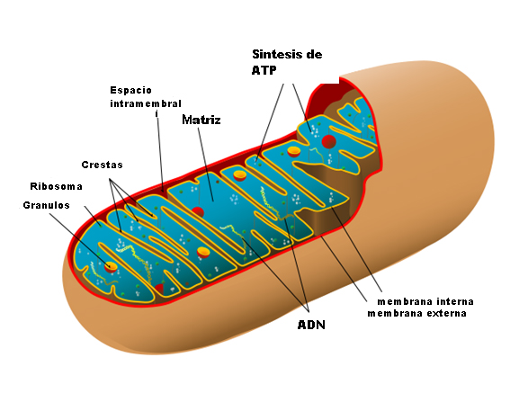

La mitocòndria
La funció principal de la mitocòndria és la obtenció d'energia a partir del metabolisme cel.lular. La mitocòndria genera energia a través del catabolisme dels lípids i dels carbohidrat, ho fa en un procés anomenat fosforil.lació oxidativa. Aquest procés necessita de la respiració cel.lular. Per tant, la mitocòndria produeix energia a partir del poder reductor provinent del catabolisme dels aliments i de l'oxigen provinent de la respiració.
La mitocòndria, a diferència de la resta d'orgànuls cel.lulars, conté el seu propi ADN i pot sintetitzar proteïnes pròpies. Però no és totalment independent de la cèl.lula que en la que habita. Necessita de la maquinària gènica nuclear en la síntesi de certes proteïnes, que seran transportades a la mitocòndria.
